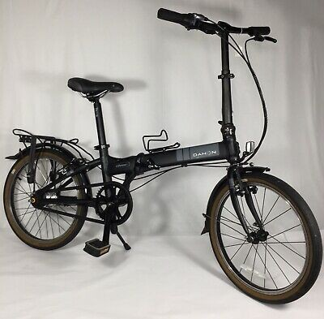
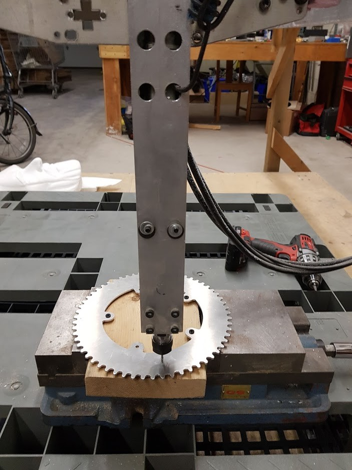

Electric Folding Bike Conversion
I built a folding e-bike to beat traffic.
There isn't a one-size fits all solution to transportation, but I've long believed that a folding e-bike is more flexible than most solutions in terms of versatility. Let's face it, most of our trips by car are short and within the city. On longer trips, a small folding e-bike can be conveniently folded up and rolled onto bus, tram, and train.
I scoured my local classifieds and found a Dahon Vitesse i7 in immaculate condition for $500. An aluminum frame, a nexus 7-speed gearbox inside the rear hub, and a long reputation for reliability. It was a clear winner.
Reverse engineering the frame and spokes took time. A set of calipers, a measuring tape, a couple of iterations, and a lot of patience. After plenty of research on how the electric skateboard guys do things, I decided to go with a belt drive using a GT3 5mm belt.
I drew the Dahon's rear wheel spoke pattern in Solidworks and designed a large pulley to fit over the spokes, inspired by Tom Stanton’s YouTube videos.
This is one of the first pulleys fresh off the printer.
Finally, I achieved success, but I soon decided I needed a wider belt for more power.
Motor and Mounting
The motor mount was one of the easier parts of the project. The final motor choice was a 3500 watt 140 kv motor from Flipsky (6374), common in the electric skateboard community.
The first motor I tried had a higher kv (170), resulting in higher RPM than I wanted. I switched to a wider belt partway through the process to combat belt stretch, which complicated the frame clearance further.
Battery and Chainring
The battery sits on the luggage carrier, which needed only minor adjustments to accommodate it. I used a section of extruded aluminum tube and designed quick-release mounts for easy removal.
I also designed a larger front chainring for pedaling at higher speeds. After testing with 3D prints, I machined the final chainring out of aluminum.
Ultimately, I went with a 60-tooth chainring I found on eBay.
Performance and Results
I used a VESC motor controller with Bluetooth to my phone, letting me monitor power, speed, and range. After a year of use, the bike has proven reliable. The electric drive is simple, accessible, and easily replaceable, with a range of about 50 km at 32 km/h.
My longest trip was 120 km in 3.5 hours with extra batteries, and for city commutes, I'm faster than by car. The bike's maneuverability and lack of sweat factor make it ideal for urban travel.
Did I beat traffic and commercial e-bike options? Who knows, but I honed my skills and now have a reliable e-bike for city travel.